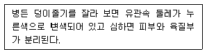

종자산업기사 (2002-05-26 기출문제)
1과목: 종자생산학 및 종자법규
1. 테트라죨륨(tetrazolium)검사시 종자의 살아 있는 조직은 어떤 색으로 착색되는가?
- 노랑색
- 붉은색
- 푸른색
- 검정색
(정답률: 알수없음)

2. 종자에서 배유의 가장 중요한 역할이라고 할 수 있는 것은?
- 종자가 발아하는 동안 배(胚)가 성장하는데 필요한 양분을 공급한다.
- 종자가 발아하는 동안 배(胚)를 외부로 부터 보호하는 역할을 한다.
- 종자가 발아하는 동안 새로운 식물체로서의 기관을 형성한다.
- 배(胚)로부터 양분을 공급받아 기관으로 성장한다.
(정답률: 알수없음)
3. 종자보증을 위한 단계를 설명한 것 중 틀린 것은?
- 자체보증은 종자관리사가 포장검사 및 종자검사를 실시한다.
- 종자생산포장은 격리거리를 갖추어야 한다.
- 종자업자가 생산한 종자에 대해서는 보증표시를 반드시 하여야 한다.
- 보증종자에 대해서는 사후관리시험을 하여야 한다.
(정답률: 알수없음)
4. 벼 포장검사기준에 관하여 맞는 것은?
- 포장검사는 유숙기로부터 호숙기사이에 2회 실시한다.
- 포장과 이품종이 논둑 등으로 구획되어 있는 경우를 제외하고는 채종포는 이품종으로부터 3m이상 격리 되어야 한다.
- 포장검사시 1/3이상이 도복되어서는 안된다.
- 원종포의 품종순도는 99.8%이상이어야 한다.
(정답률: 37%)
5. 다음 중 종자관리사의 자격취소에 해당하는 위반사항이 아닌 것은?
- 종자보증과 관련하여 형의 선고를 받은 경우
- 종자관리사 자격과 관련하여 2회이상 이중취업을 한 경우
- 자격정지처분을 받은 후 자격정지처분기간내에 자격증을 사용한 경우
- 종자보증과 관련하여 고의 또는 중대한 과실로 타인에게 막대한 손해를 가한 경우
(정답률: 알수없음)
6. 종자의 활력을 충분히 가질 수 있는 적정수확기의 판단으로 옳은 것은?
- 적기보다 빨리하여 약간 미숙립이 생겨도 된다.
- 적기보다 약간 늦게 하여 과숙을 시킨다.
- 적기보다 빨리하여 수분함량을 충분하게 한다.
- 작물별 적기 수확시의 수분함량으로 판단하여 수확한다.
(정답률: 알수없음)
7. 웅성불임을 이용하여 F1종자를 생산하고자 한다. 다음 중 종실을 이용 목적으로 재배하는 작물의 경우 이용될 수 없는 F1종자 생산 방법은?
- 유전자적 웅성불임
- 세포질적 웅성불임
- 세포질적 유전자적 웅성불임
- Gametocides을 이용한 웅성불임
(정답률: 알수없음)
8. 다음 중 발아시 광조건과 무관한 불감수성 종자는?
- 양파
- 상추
- 담배
- 옥수수
(정답률: 알수없음)
9. 다음 작물종자 중에서 실용적인 종자 발아력 생성시기가 가장 빠른 작물은?
- 참외
- 가지
- 무
- 당근
(정답률: 알수없음)
10. 채종재배에서 화곡류의 일반적인 수확적기는?
- 유숙기
- 황숙기
- 갈숙기
- 고숙기
(정답률: 알수없음)
11. 콩의 파종량을 5kg/10a로 하였을 때 10a에서 기대되는 채종량은?
- 250 kg
- 500 kg
- 750 kg
- 1,000 kg
(정답률: 알수없음)
12. 다음 중 반드시 한 개의 고유한 품종명칭을 가져야 하는 경우가 아닌 것은?
- 야생종을 수집하여 육종재료로 사용 할 경우
- 복숭아 품종을 육성하여 판매하고자 생산수입판매 신고를 하고자 할 경우
- 무 신품종을 육성하여 품종보호를 받고자 할 경우
- 벼 품종을 수입하여 판매하고자 국가품종목록에 등재를 신청하고자 할 경우
(정답률: 알수없음)
13. 다음 중 국가 품종목록에 등재해야하는 대상 품종이 아닌 것은?
- 새로운 보리 품종을 육성하여 보급하고자 할 경우
- 감자의 품종을 도입하여 국내에 보급하고자 할 경우
- 밀에 대한 신품종을 육성하여 판매하고자 할 경우
- 식용옥수수 품종을 수입하여 공급하고자 할 경우
(정답률: 알수없음)
14. 농림부장관이 품종보호권의 설정등록이 된 이후 공보에 게재하여야 할 내용으로 잘못된 것은?
- 품종보호권자의 성명
- 품종보호 등록번호
- 납부 할 품종보호료
- 품종보호권의 존속기간
(정답률: 알수없음)
15. 특히 오전 중에 수분시켜야 수정이 잘 되는 채소는?
- 배추과
- 박과
- 가지과
- 미나리과
(정답률: 알수없음)
16. 불임성과 불화합성의 원인이 아닌 것은?
- 자성기관 또는 웅성기관의 이상
- 자가불화합성
- 무핵란 생식
- 이형예 불화합성
(정답률: 알수없음)
17. 다음 조건 중 종자의 발아력을 가장 오래 유지할 수 있는 조건은?
- 온도 17℃, 상대습도 40%
- 온도 19℃, 상대습도 57%
- 온도 21℃, 상대습도 57%
- 온도 25℃, 상대습도 62%
(정답률: 알수없음)
18. 종자내 수분함량을 측정하는 방법 중에서 건조기를 이용해 고온 (130 - 133℃)에서 건조시켜 측정하는 경우가 있는데 옥수수의 건조시간은 얼마인가?
- 1시간
- 2시간
- 3시간
- 4시간
(정답률: 알수없음)
19. 종자전염성 병의 방제법을 가장 옳게 설명한 것은?
- 파종 직전 종자처리로 완전 방제가 가능하다.
- 종자저장 중 방제로 모든 병해충을 방제할 수 있다.
- 종자수확 후 방제에 의하여 전염원을 제거할 수 있다.
- 종자수확 전 방제가 가장 중요하다.
(정답률: 50%)
20. 펠렛(단립, 과립)종자를 이용하는 가장 중요한 목적은?
- 저장력 향상
- 휴면타파
- 기계파종 유리
- 조기착과 유도
(정답률: 알수없음)
2과목: 식물육종학
21. 체세포 염색체수가 20인 2배체 식물의 연관군 수는?
- 20
- 12
- 10
- 2
(정답률: 알수없음)
22. 유전력에 대한 설명으로 틀린 것은?
- 표현형 분산 중 유전 분산의 비율이다.
- 영양번식 작물은 넓은 뜻의 유전력이 적용된다.
- 좁은 뜻의 유전력은 넓은 뜻의 유전력 중에서 비상가적 효과의 분산을 제외한 비율이다.
- 선발은 유전력이 낮을수록 유리하다.
(정답률: 알수없음)
23. 고정된 품종의 특성을 계속 유지시키기 위한 방법 중 틀린 것은?
- 격리재배
- 다비재배
- 원원종재배
- 종자저장
(정답률: 알수없음)
24. 저항성과 같은 생리적 형질에 대한 변이의 감별법으로서 가장 적합한 것은?
- 후대검정
- 특성검정
- 상관의 이용
- 검정교배
(정답률: 알수없음)
25. 일반 조합능력 검정에 가장 많이 사용되는 검정법은?
- 단교배검정
- 다교배검정
- 후대검정
- 톱(TOP)교배검정
(정답률: 알수없음)
26. 재래종의 육종상 중요한 의의는?
- 재배지역의 기상 상태형에 적합한 인자를 다수 보유한다.
- 각종 저항성이 신품종 보다 크다.
- 수량과 품질이 우수하다.
- 종자를 확보하기 쉽다.
(정답률: 알수없음)
27. 다음 중 DNA에 들어있는 염기가 아닌 것은?
- 아데닌
- 우라실
- 구아닌
- 티민
(정답률: 알수없음)
28. 작물육종에 이용하기 부적당한 변이는?
- 교잡변이
- 돌연변이
- 환경변이
- 아조변이
(정답률: 알수없음)
29. 형질전환을 위한 외래유전자 도입방법 중 토양세균의 DNA가 식물세포의 핵게놈에 끼어 들어가는 원리를 이용한 방법과 관련된 것은?
- Ti-plasmid
- gene gun
- CaMV virus
- microinjection
(정답률: 알수없음)
30. 품종의 퇴화를 유전자 퇴화와 생리적 퇴화로 나눌 때 생리적 퇴화에 속하는 것은?
- 토양적 퇴화
- 돌연변이 퇴화
- 자연교잡 퇴화
- 이형 유전자형의 분리
(정답률: 알수없음)
31. Raphano-Brassica의 내력에 대한 설명 중 옳은 것은?
- 무우 × 양배추
- 양배추 × 무우
- 배추 × 순무
- 순무 × 배추
(정답률: 37%)
32. 다음 중 중복수정 결과를 맞게 설명한 것은?
- 정핵이 난핵과 융합하여 3n인 배유를 만든다.
- 정핵이 난핵과 융합하여 2n인 배를 만든다.
- 정핵이 극핵과 융합하여 2n인 배유를 만든다.
- 정핵이 극핵과 융합하여 2n인 배를 만든다.
(정답률: 알수없음)
33. 2 집단 평균치간의 차를 검정하는 통계적인 방법은?
- 분산분석
- 분할구 시험법
- X2 검정
- t 검정
(정답률: 알수없음)
34. 농작물 신품종의 구비조건을 옳게 나열한 것은?
- 균등성, 잡종강세성, 다수성
- 다수성, 배수성, 우수성
- 잡종강세성, 영속성, 배수성
- 우수성, 균등성, 영속성
(정답률: 알수없음)
35. 유전적 원인에 의한 불임현상이 아닌 것은?
- 이형예 현상(Hetero stylism)
- 다즙질 불임성(Plethoric sterility)
- 세포질적 불임성(Cytoplasmic sterility)
- 자가불화합성(Self - incompatiblity)
(정답률: 70%)
36. 종속간의 교배에 의해 새로운 잡종식물을 만들어 내는데 가장 효과적으로 사용될 수 있는 방법은?
- 화분배양
- 배배양(胚培養)
- 일장(日長)처리
- 단위결과 유발 물질 처리
(정답률: 알수없음)
37. 다음 F1 품종 중 잡종강세가 가장 크게 나타나는 것은?
- 단교배 품종
- 3원교배 품종
- 복교배 품종
- 합성품종
(정답률: 알수없음)
38. 배수체의 영양기관 생육증진은 다음 어느 정도에서 최대에 달하는가?
- 2배체
- 5배체
- 6배체
- 8배체
(정답률: 알수없음)
39. 다음 중 염색체의 수적변이는?
- 역위
- 이수성
- 중복
- 전좌
(정답률: 알수없음)
40. 5개 품종을 4반복으로 3개소에서 수량검정을 시험한 결과를 분산 분석할 때 품종간의 차를 검토할 오차의 자유도는 얼마인가? (단,장소를 주구로 하고 품종을 세구로 함)
- 36
- 8
- 6
- 4
(정답률: 알수없음)
3과목: 재배원론
41. 작물의 생장억제제로 이용하고 있는 것은?
- MH ( maleic hydrazide )
- IAA ( B-Indole acetic acid )
- Gibberellin
- MCPA
(정답률: 알수없음)
42. 환경보존형 지속농업의 실천방안으로 볼 수 없는 것은?
- 생물학적인 순환과 조절기능을 이용한다.
- 녹비작물의 재배를 늘린다.
- 복합저항성 품종을 육성하여 보급한다.
- 고투입을 통해 생산성을 유지 증가시킨다.
(정답률: 알수없음)
43. 방사성동위원소의 이용에 관한 설명으로 적절하지 않은 것은?
- 식물체내의 에너지원으로 이용
- 표지화합물로 작물의 생리연구에 이용
- 영양기관의 장기저장에 이용
- 돌연변이를 유발시켜 육종에 이용
(정답률: 알수없음)
44. 산성토양에 가장 강한 작물로 짝지은 것은?
- 벼, 호밀
- 땅콩, 콩
- 보리, 귀리
- 콩, 양파
(정답률: 알수없음)
45. 작물의 생육과정에서 화성( 花性 )을 유발케 하는 요인이 아닌 것은?
- C - N 율
- N - K 율
- 식물홀몬
- 일장효과
(정답률: 알수없음)
46. 겨울철 작물의 내동성을 높히는 요인이 아닌 것은?
- 지방 함량이 적다.
- 당분 함량이 높다.
- 세포의 수분함량이 낮다.
- 칼슘, 마그네슘 함량이 많다
(정답률: 알수없음)
47. 감자의 번식에 사용되는 종서는 다음 중 어느 것인가?
- 비늘줄기 (鱗莖)
- 알뿌리 (球莖)
- 덩이뿌리 (塊根)
- 덩이줄기 (塊莖)
(정답률: 알수없음)
48. 추락답의 벼 뿌리에 유해작용을 하는 물질 중 가장 피해를 많이 주는 것은?
- 황화수소
- 이산화탄소
- 메탄가스
- 유기산
(정답률: 알수없음)
49. 다음 작부방식 중 가장 일찍 실시 되었던 농법은?
- 휴한농법
- 이동경작
- 개량 삼포식농법
- 자유경작법
(정답률: 알수없음)
50. 기상생태형을 구성하는 성질이 아닌 것은?
- 굴광성
- 감광성
- 감온성
- 기본영양생장성
(정답률: 알수없음)
51. 작물이 생육기간 중에 장해형 냉해를 가장 받기 쉬운 시기는?
- 발아기
- 유묘기
- 등숙기
- 감수분열기
(정답률: 알수없음)
52. 기지(忌地)의 대책으로 옳지 않은 것은?
- 연작
- 담수처리
- 객토와 환토
- 토양소독
(정답률: 알수없음)
53. 작물의 뿌리에서 물의 흡수가 가장 왕성하게 이루어지는 부위는 다음 중 어느 것인가?
- 근관
- 근모
- 생장점
- 신장부
(정답률: 알수없음)
54. 작물재배의 생력화를 위한 조건은?
- 경영단위의 축소
- 잉여노동력 흡수, 이식, 적심재배
- 재배면적 축소, 개별재배
- 경지정리, 집단재배, 제초제이용
(정답률: 알수없음)
55. 단위결과가 가장 잘 되는 과실로 짝 지은 것은?
- 귤, 포도
- 복숭아, 감귤
- 사과, 감
- 자두, 포도
(정답률: 알수없음)
56. 춘화처리의 농업적 이용으로 가장 옳은 것은?
- 채종상의 이용
- 춘파맥류의 추파 가능
- 내비성의 증대
- 출수개화의 지연
(정답률: 알수없음)
57. 논의 추경(가을갈이)효과가 크게 나타나는 조건은?
- 다년생 잡초가 많을 때
- 유기물함량이 많을 때
- 겨울철 강우가 많을 때
- 배수가 양호할 때
(정답률: 알수없음)
58. 식물의 화성 유도에 대한 설명으로 잘못된 것은?
- 일반적으로 월년생작물들은 생육초기의 저온에 의해서 화성이 유도된다.
- 추파맥류는 저온감온상과 장일 감광상이 뚜렷하다.
- 온도와 일장이 식물의 화성에 영향을 미친다.
- 벼의 단일 감광형 품종을 장일환경에서 생육시키면 출수가 촉진된다.
(정답률: 알수없음)
59. 다음 작물 중에서 타가수정으로 번식하는 것이 유리한 것은?
- 벼
- 옥수수
- 보리
- 밀
(정답률: 알수없음)
60. 다음 중 T/R율이 가장 많이 증대하는 것은?
- 칼륨비료 다량시용
- 인산비료 다량시용
- 질소비료 다량시용
- 석회다량 시용
(정답률: 알수없음)
4과목: 식물보호학
61. 곤충이 번성하게 된 원인과 가장 관계가 먼 사항은?
- 불완전변태
- 날개의 출현
- 외골격의 발달
- 몸의 구조의 적응력
(정답률: 알수없음)
62. 다음 중 바르게 연결하지 않은 것은?
- 직접 접촉 살충제 - 제충국제
- 직접 살균제 - 석회보르도액
- 유인제 - 터펜유(terpene 油)
- 살비제 - 켈센
(정답률: 알수없음)
63. 농약 살포시 식물에 대한 약해의 원인이 되는 것 중 가장 거리가 먼 것은?
- 불합리한 농약 혼용
- 2종 이상의 약제를 며칠 간격으로 처리하는 근접살포
- 지하수 사용
- 기상조건
(정답률: 알수없음)
64. 다음 중 항생제 농약은?
- 아바멕틴(abamectin)유제(올스타)
- 아시트 수화제(오트란)
- 아조포 유제(호스타치온)
- 아진포 수화제(구사치온)
(정답률: 알수없음)
65. 다음은 감자의 어떤 병의 증상인가?

- 역병
- 둘레썩음병
- 잎말림병
- 더뎅이병
(정답률: 60%)
66. 쌀바구미의 연 발생회수와 월동태는?
- 연 1회 발생, 월동태 - 성충
- 연 2회 발생, 월동태 - 알
- 연 3∼4회 발생, 월동태 - 유충 또는 성충
- 연 6∼7회 발생, 월동태 - 유충 또는 성충
(정답률: 알수없음)
67. 농약 주제의 성질이 지용성으로 물에 녹지 않을 때 이것을 유기용매에 녹여 유화제를 첨가하여 만든 용액은 어느 것인가?
- 유제
- 액제
- 분제
- 수화제
(정답률: 알수없음)
68. 박테리오파지를 이용한 병원세균의 정량이 가능한 것은 다음의 어느 현상 때문인가?
- 삼투현상
- 침출현상
- 용균현상
- 항균현상
(정답률: 알수없음)
69. 잡초를 생장형에 따라 분류할 때에 질경이는 무슨 형에 속하는가?
- 직립형
- 분지형
- 총생형
- 로제트형
(정답률: 알수없음)
70. 생활형에 따른 잡초의 분류방법은?
- 다년생 잡초
- 화본과 잡초
- 포복형 잡초
- 논 잡초
(정답률: 알수없음)
71. 다년생 잡초가 아닌 것은?
- 너도방동사니
- 쇠비름
- 메꽃
- 벗풀
(정답률: 알수없음)
72. 벼흰잎마름병의 방제방법과 거리가 먼 것은?
- 발생예찰
- 태풍 후 약제살포
- 질소비료 과용 회피
- 종자소독
(정답률: 알수없음)
73. 다음 중 곤충의 휴면에 관한 설명 중 틀린 것은?
- 불리한 환경을 극복하는 수단이다.
- 매 세대마다 휴면에 들어가는 것을 의무적 휴면이라고 한다.
- 장거리 이동을 하기 위한 수단이다.
- 대사와 발육이 정지상태로 들어간다.
(정답률: 알수없음)
74. 다음 중 잡초 종자의 발아에 끼치는 영향이 가장 적은 것은?
- 온도
- 수분
- 이산화탄소 농도
- 광
(정답률: 알수없음)
75. 과수뿌리혹병(根頭癌腫病)의 병원균이 월동하는 주된 장소는?
- 토양
- 잎
- 줄기
- 열매
(정답률: 알수없음)
76. 다음 중 벼도열병의 1차 전염원이 되는 것은?
- 병원체에 감염된 종자
- 병원체에 오염된 토양
- 병 매개충
- 풍매전염
(정답률: 알수없음)
77. 다음 중에서 주로 고추의 열매를 가해하는 해충은?
- 멸강나방
- 담배나방
- 감자나방
- 거세미나방
(정답률: 알수없음)
78. 살아있는 조직에서만 생활이 가능한 절대활물기생균이 아닌 것은?
- 녹병균
- 역병균
- 흰가루병균
- 노균병균
(정답률: 알수없음)
79. 다음 중 곤충의 특징을 틀리게 설명한 것은?
- 모든 곤충은 1쌍의 겹눈과 1∼3개의 홑눈을 가지고 있다.
- 가슴에는 대개 2쌍의 기문이 있다.
- 인간에 피해를 주는 해충보다는 피해가 거의 없거나 유익한 곤충이 더 많다.
- 날개는 가운데 가슴과 뒷가슴에 위치한다.
(정답률: 알수없음)
80. 작물보호란 작물이 피해를 받는 각종 피해 원인들로부터 이들에 의한 피해를 제거하는 기술을 말한다. 다음 피해의 원인 중 생물학적 피해원인이 아닌 것은?
- 세균
- 균류
- 과습
- 해충
(정답률: 알수없음)